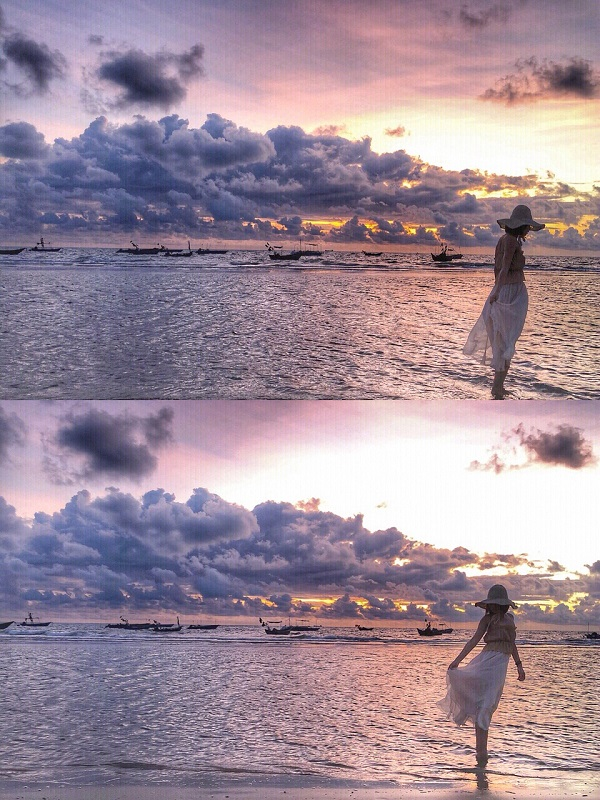
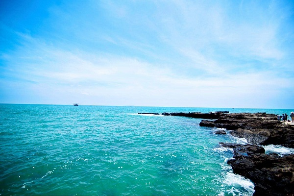

北海银滩
一路沿着大小不齐的石块，石块上的沙粒也是那么细腻，赤着脚才能感觉到它的存在。之所以北海银滩如此有闻名，是因为海滩的白沙和海中无鲨的特点。银滩的沙真细啊，用双手捧起一把细沙细沙如同一股清水般从手指缝里滑落下来；银滩的沙真软啊，走在白沙里，仿佛踩在云朵之上，一步一个脚印，每个脚印都像童年天真的笑容；银滩的水真美啊，分别有四种颜色，黄绿、翠绿、青绿和天蓝，一层隔着一层，如同画中的渐变色格外美丽；银滩的水真净啊，无边无际的海面看不到一丝杂物，只看见近处的海草和远处的游船；银滩的水真有趣啊，时而猛，时而静，时而惊涛拍岸，时而清波漾漾。看着它白浪翻滚，我张开双臂正要拥抱可它却淘气地逃跑了，浪花亲吻着我的脚丫，让我感到无比惬意！生机勃勃的春天悄悄地到来，海面也仿佛带着一股春意，真是“海日生残夜，江春入旧年！”一路沿着海岸线走，远望蔚蓝的大海，手捧雪白的细沙，一阵微风佛过，手中的细沙从手臂掠过。在松软的沙滩中有许多小洞，那便是沙蟹的家，沙蟹爬出洞口，似乎正在寻找食物。孩子们在沙滩追逐、嬉戏，从远处看真如一 幅美丽的画卷！北海银滩，我赞美你迷人的景色，使我流连忘返!  